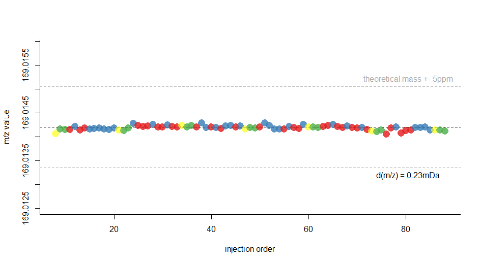

Quality Management in Metabolomics
Mar Garcia-Aloy
Quality Management (QM) encompasses a series of activities that provide a mechanism to ensure that measurements are repeatable.
Quality Management (QM) encompasses a series of activities that provide a mechanism to ensure that measurements are repeatable.
Some initial aspects to keep in mind…
- MS performance degrade with time -> reduce as much as possible the length of the chromatographic run
- We cannot avoid analytical variability -> Add QC samples along your sequence
- Randomize the order in which the samples will be injected
- In case or large sample sets, consider stratifying the samples across batches
Randomization
In case of small datasets -> complete randomization
Randomization
In case of large datasets -> block experimental design before randomization
- Balance the number of samples for each factor of interest among the batches
- Consider if allocate all samples from the same ID (i.e., plant, subject….) in the same batch
Randomization: large datasets - Expl 1
Wine study:
- 2 types of wines: white wine & red wine (20 samples /type of wine)
- 12 varieties: pinot grigio, chardonnay, vermentino, moscato, […] pinot noir, cannonau, shiraz (2-6 samples /variety)
Randomization: large datasets - Expl 1
Wine study:
id color variety cantina id color variety cantina
1 white pinot_grigio AA 21 red merlot AU
2 white pinot_grigio AB 22 red merlot AV
3 white pinot_grigio AC 23 red merlot AW
4 white pinot_grigio AD 24 red merlot AX
5 white pinot_grigio AE 25 red lagrein AY
6 white pinot_grigio AF 26 red lagrein AZ
7 white chardonnay AG 27 red lagrein BA
8 white chardonnay AH 28 red lagrein BB
9 white chardonnay AI 29 red sangiovese BC
10 white chardonnay AJ 30 red sangiovese BD
11 white chardonnay AK 31 red sangiovese BE
12 white chardonnay AL 32 red sangiovese BF
13 white vermentino AM 33 red pinot_noir BG
14 white vermentino AN 34 red pinot_noir BH
15 white moscato AO 35 red pinot_noir BI
16 white moscato AP 36 red pinot_noir BJ
17 white gewurztraminer AQ 37 red cannonau BK
18 white gewurztraminer AR 38 red cannonau BL
19 white sauvignon AS 39 red shiraz BM
20 white sauvignon AT 40 red shiraz BN
Randomization: large datasets - Expl 1
Wine study:
pinot_grigio chardonnay vermentino moscato gewurztraminer sauvignon
white 6 6 2 2 2 2
red 0 0 0 0 0 0
merlot lagrein sangiovese pinot_noir cannonau shiraz
white 0 0 0 0 0 0
red 4 4 4 4 2 2
Randomization: large datasets - Expl 1
Wine study:
- Distribute the samples among 2 batches
- Same amount of white/red wines /batch
- Same amount of each variety /batch
Randomization: large datasets - Expl 1
Wine study:
Step 1: randomize samples
id color variety cantina rnd id color variety cantina rnd
1 white pinot_grigio AA 31 21 red merlot AU 30
2 white pinot_grigio AB 15 22 red merlot AV 4
3 white pinot_grigio AC 14 23 red merlot AW 36
4 white pinot_grigio AD 3 24 red merlot AX 17
5 white pinot_grigio AE 38 25 red lagrein AY 11
6 white pinot_grigio AF 25 26 red lagrein AZ 23
7 white chardonnay AG 26 27 red lagrein BA 40
8 white chardonnay AH 27 28 red lagrein BB 12
9 white chardonnay AI 32 29 red sangiovese BC 22
10 white chardonnay AJ 5 30 red sangiovese BD 39
11 white chardonnay AK 19 31 red sangiovese BE 21
12 white chardonnay AL 33 32 red sangiovese BF 13
13 white vermentino AM 35 33 red pinot_noir BG 2
14 white vermentino AN 28 34 red pinot_noir BH 16
15 white moscato AO 9 35 red pinot_noir BI 29
16 white moscato AP 37 36 red pinot_noir BJ 20
17 white gewurztraminer AQ 8 37 red cannonau BK 1
18 white gewurztraminer AR 7 38 red cannonau BL 6
19 white sauvignon AS 10 39 red shiraz BM 18
20 white sauvignon AT 34 40 red shiraz BN 24
Randomization: large datasets - Expl 1
Wine study:
Step 2: order by color - variety - random
id color variety cantina rnd id color variety cantina rnd
4 white pinot_grigio AD 3 22 red merlot AV 4
3 white pinot_grigio AC 14 24 red merlot AX 17
2 white pinot_grigio AB 15 21 red merlot AU 30
6 white pinot_grigio AF 25 23 red merlot AW 36
1 white pinot_grigio AA 31 25 red lagrein AY 11
5 white pinot_grigio AE 38 28 red lagrein BB 12
10 white chardonnay AJ 5 26 red lagrein AZ 23
11 white chardonnay AK 19 27 red lagrein BA 40
7 white chardonnay AG 26 32 red sangiovese BF 13
8 white chardonnay AH 27 31 red sangiovese BE 21
9 white chardonnay AI 32 29 red sangiovese BC 22
12 white chardonnay AL 33 30 red sangiovese BD 39
14 white vermentino AN 28 33 red pinot_noir BG 2
13 white vermentino AM 35 34 red pinot_noir BH 16
15 white moscato AO 9 36 red pinot_noir BJ 20
16 white moscato AP 37 35 red pinot_noir BI 29
18 white gewurztraminer AR 7 37 red cannonau BK 1
17 white gewurztraminer AQ 8 38 red cannonau BL 6
19 white sauvignon AS 10 39 red shiraz BM 18
20 white sauvignon AT 34 40 red shiraz BN 24
Randomization: large datasets - Expl 1
Wine study:
Step 3: distribute 1 sample/batch
id color variety cantina rnd batch id color variety cantina rnd batch
4 white pino_grigio AD 3 1 22 red merlot AV 4 1
3 white pino_grigio AC 14 2 24 red merlot AX 17 2
2 white pino_grigio AB 15 1 21 red merlot AU 30 1
6 white pino_grigio AF 25 2 23 red merlot AW 36 2
1 white pino_grigio AA 31 1 25 red lagrein AY 11 1
5 white pino_grigio AE 38 2 28 red lagrein BB 12 2
10 white chardonnay AJ 5 1 26 red lagrein AZ 23 1
11 white chardonnay AK 19 2 27 red lagrein BA 40 2
7 white chardonnay AG 26 1 32 red sangiovese BF 13 1
8 white chardonnay AH 27 2 31 red sangiovese BE 21 2
9 white chardonnay AI 32 1 29 red sangiovese BC 22 1
12 white chardonnay AL 33 2 30 red sangiovese BD 39 2
14 white vermentino AN 28 1 33 red pino_noir BG 2 1
13 white vermentino AM 35 2 34 red pino_noir BH 16 2
15 white moscato AO 9 1 36 red pino_noir BJ 20 1
16 white moscato AP 37 2 35 red pino_noir BI 29 2
18 white gewurztrami AR 7 1 37 red cannonau BK 1 1
17 white gewurztrami AQ 8 2 38 red cannonau BL 6 2
19 white sauvignon AS 10 1 39 red shiraz BM 18 1
20 white sauvignon AT 34 2 40 red shiraz BN 24 2
Randomization: large datasets - Expl 1
Wine study:
Step 4: order by batch - random
id color variety cantina rnd batch id color variety cantina rnd batch
37 red cannonau BK 1 1 38 red cannonau BL 6 2
33 red pino_noir BG 2 1 17 white gewurztram AQ 8 2
4 white pino_grigi AD 3 1 28 red lagrein BB 12 2
22 red merlot AV 4 1 3 white pino_grigi AC 14 2
10 white chardonnay AJ 5 1 34 red pino_noir BH 16 2
18 white gewurztram AR 7 1 24 red merlot AX 17 2
15 white moscato AO 9 1 11 white chardonnay AK 19 2
19 white sauvignon AS 10 1 31 red sangiovese BE 21 2
25 red lagrein AY 11 1 40 red shiraz BN 24 2
32 red sangiovese BF 13 1 6 white pino_grigi AF 25 2
2 white pino_grigi AB 15 1 8 white chardonnay AH 27 2
39 red shiraz BM 18 1 35 red pino_noir BI 29 2
36 red pino_noir BJ 20 1 12 white chardonnay AL 33 2
29 red sangiovese BC 22 1 20 white sauvignon AT 34 2
26 red lagrein AZ 23 1 13 white vermentino AM 35 2
7 white chardonnay AG 26 1 23 red merlot AW 36 2
14 white vermentino AN 28 1 16 white moscato AP 37 2
21 red merlot AU 30 1 5 white pino_grigi AE 38 2
1 white pino_grigi AA 31 1 30 red sangiovese BD 39 2
9 white chardonnay AI 32 1 27 red lagrein BA 40 2
Randomization: large datasets - Expl 1
Wine study:
Randomization: large datasets - Expl 1
Wine study:
red white
Batch 1 10 10
Batch 2 10 10
chardo gewurz moscat p_grig sauvig vermen
Batch 1 3 1 1 3 1 1
Batch 2 3 1 1 3 1 1
cannon lagrei merlot p_noir sangio shiraz
Batch 1 1 2 2 2 2 1
Batch 2 1 2 2 2 2 1
Randomization: large datasets - Expl 2
Kinetic study with cross-over design:
- 2 foods: A & B
- 2 sequences: A -> B / B -> A
- 10 volunteers (5 men & 5 women)
- 8 time-points /intervention
Randomization: large datasets - Expl 2
Kinetic study with cross-over design:
- 2 foods: A & B
- 2 sequences
- 10 volunteers
- 8 time-points /intervention
- All samples from the same volunteer in the same batch
Randomization: large datasets - Expl 1
Kinetic study:
volunteer gender food time volunteer gender food time
1 male A 0 6 female A 0
1 male A 1 6 female A 1
1 male A 2 6 female A 2
1 male A 4 6 female A 4
1 male A 6 6 female A 6
1 male A 12 6 female A 12
1 male A 24 6 female A 24
1 male A 48 6 female A 48
1 male B 0 6 female B 0
1 male B 1 6 female B 1
1 male B 2 6 female B 2
1 male B 4 6 female B 4
1 male B 6 6 female B 6
1 male B 12 6 female B 12
1 male B 24 6 female B 24
1 male B 48 6 female B 48
2 male A 0 7 female A 0
2 male A 1 7 female A 1
2 male A 2 7 female A 2
2 male A 4 7 female A 4
2 male A 6 7 female A 6
2 male A 12 7 female A 12
2 male A 24 7 female A 24
2 male A 48 7 female A 48
2 male B 0 7 female B 0
2 male B 1 7 female B 1
2 male B 2 7 female B 2
2 male B 4 7 female B 4
2 male B 6 7 female B 6
2 male B 12 7 female B 12
2 male B 24 7 female B 24
2 male B 48 7 female B 48
3 male A 0 8 female A 0
3 male A 1 8 female A 1
3 male A 2 8 female A 2
3 male A 4 8 female A 4
3 male A 6 8 female A 6
3 male A 12 8 female A 12
3 male A 24 8 female A 24
3 male A 48 8 female A 48
3 male B 0 8 female B 0
3 male B 1 8 female B 1
3 male B 2 8 female B 2
3 male B 4 8 female B 4
3 male B 6 8 female B 6
3 male B 12 8 female B 12
3 male B 24 8 female B 24
3 male B 48 8 female B 48
4 male A 0 9 female A 0
4 male A 1 9 female A 1
4 male A 2 9 female A 2
4 male A 4 9 female A 4
4 male A 6 9 female A 6
4 male A 12 9 female A 12
4 male A 24 9 female A 24
4 male A 48 9 female A 48
4 male B 0 9 female B 0
4 male B 1 9 female B 1
4 male B 2 9 female B 2
4 male B 4 9 female B 4
4 male B 6 9 female B 6
4 male B 12 9 female B 12
4 male B 24 9 female B 24
4 male B 48 9 female B 48
5 male A 0 10 female A 0
5 male A 1 10 female A 1
5 male A 2 10 female A 2
5 male A 4 10 female A 4
5 male A 6 10 female A 6
5 male A 12 10 female A 12
5 male A 24 10 female A 24
5 male A 48 10 female A 48
5 male B 0 10 female B 0
5 male B 1 10 female B 1
5 male B 2 10 female B 2
5 male B 4 10 female B 4
5 male B 6 10 female B 6
5 male B 12 10 female B 12
5 male B 24 10 female B 24
5 male B 48 10 female B 48
Randomization: large datasets - Expl 2
Kinetic study:
10 volunteers x 2 foods/volunteer x 8 time-points /food / volunteer = 160 samples
- Distribute the samples among 2 batches
- Allocate 80 samples/batch
- Put all samples from the same subject in the same batch
- Same amount of men & women /batch
- Distribute equally the order of interventions (A->B / B->A) between batches
Randomization: large datasets - Expl 2
Kinetic study:
Step 1: randomize subjects
volunteer gender seq rnd
1 male AB 3
2 male BA 10
3 male AB 2
4 male BA 8
5 male AB 6
6 female BA 9
7 female AB 1
8 female BA 7
9 female AB 5
10 female BA 4
Randomization: large datasets - Expl 2
Kinetic study:
Step 2: order by gender - sequence - random
volunteer gender seq rnd
3 male AB 2
1 male AB 3
5 male AB 6
4 male BA 8
2 male BA 10
7 female AB 1
9 female AB 5
10 female BA 4
8 female BA 7
6 female BA 9
Randomization: large datasets - Expl 2
Kinetic study:
Step 3: distribute 1 volunteer/batch
volunteer gender seq rnd batch
3 male AB 2 1
1 male AB 3 2
5 male AB 6 1
4 male BA 8 2
2 male BA 10 1
7 female AB 1 2
9 female AB 5 1
10 female BA 4 2
8 female BA 7 1
6 female BA 9 2
Randomization: large datasets - Expl 2
Kinetic study:
Step 3: distribute 1 volunteer/batch
male female
Batch 1 3 2
Batch 2 2 3
AB BA
Batch 1 3 2
Batch 2 2 3
, , = Batch 1
male female
AB 2 1
BA 1 1
, , = Batch 2
male female
AB 1 1
BA 1 2
Randomization: large datasets - Expl 2
Kinetic study:
Step 4: update dataset of samples with corresponding batch according to volunteer
volunteer gender food time batch volunteer gender food time batch
1 male A 0 2 6 female A 0 2
1 male A 1 2 6 female A 1 2
1 male A 2 2 6 female A 2 2
1 male A 4 2 6 female A 4 2
1 male A 6 2 6 female A 6 2
1 male A 12 2 6 female A 12 2
1 male A 24 2 6 female A 24 2
1 male A 48 2 6 female A 48 2
1 male B 0 2 6 female B 0 2
1 male B 1 2 6 female B 1 2
1 male B 2 2 6 female B 2 2
1 male B 4 2 6 female B 4 2
1 male B 6 2 6 female B 6 2
1 male B 12 2 6 female B 12 2
1 male B 24 2 6 female B 24 2
1 male B 48 2 6 female B 48 2
2 male A 0 1 7 female A 0 2
2 male A 1 1 7 female A 1 2
2 male A 2 1 7 female A 2 2
2 male A 4 1 7 female A 4 2
2 male A 6 1 7 female A 6 2
2 male A 12 1 7 female A 12 2
2 male A 24 1 7 female A 24 2
2 male A 48 1 7 female A 48 2
2 male B 0 1 7 female B 0 2
2 male B 1 1 7 female B 1 2
2 male B 2 1 7 female B 2 2
2 male B 4 1 7 female B 4 2
2 male B 6 1 7 female B 6 2
2 male B 12 1 7 female B 12 2
2 male B 24 1 7 female B 24 2
2 male B 48 1 7 female B 48 2
3 male A 0 1 8 female A 0 1
3 male A 1 1 8 female A 1 1
3 male A 2 1 8 female A 2 1
3 male A 4 1 8 female A 4 1
3 male A 6 1 8 female A 6 1
3 male A 12 1 8 female A 12 1
3 male A 24 1 8 female A 24 1
3 male A 48 1 8 female A 48 1
3 male B 0 1 8 female B 0 1
3 male B 1 1 8 female B 1 1
3 male B 2 1 8 female B 2 1
3 male B 4 1 8 female B 4 1
3 male B 6 1 8 female B 6 1
3 male B 12 1 8 female B 12 1
3 male B 24 1 8 female B 24 1
3 male B 48 1 8 female B 48 1
4 male A 0 2 9 female A 0 1
4 male A 1 2 9 female A 1 1
4 male A 2 2 9 female A 2 1
4 male A 4 2 9 female A 4 1
4 male A 6 2 9 female A 6 1
4 male A 12 2 9 female A 12 1
4 male A 24 2 9 female A 24 1
4 male A 48 2 9 female A 48 1
4 male B 0 2 9 female B 0 1
4 male B 1 2 9 female B 1 1
4 male B 2 2 9 female B 2 1
4 male B 4 2 9 female B 4 1
4 male B 6 2 9 female B 6 1
4 male B 12 2 9 female B 12 1
4 male B 24 2 9 female B 24 1
4 male B 48 2 9 female B 48 1
5 male A 0 1 10 female A 0 2
5 male A 1 1 10 female A 1 2
5 male A 2 1 10 female A 2 2
5 male A 4 1 10 female A 4 2
5 male A 6 1 10 female A 6 2
5 male A 12 1 10 female A 12 2
5 male A 24 1 10 female A 24 2
5 male A 48 1 10 female A 48 2
5 male B 0 1 10 female B 0 2
5 male B 1 1 10 female B 1 2
5 male B 2 1 10 female B 2 2
5 male B 4 1 10 female B 4 2
5 male B 6 1 10 female B 6 2
5 male B 12 1 10 female B 12 2
5 male B 24 1 10 female B 24 2
5 male B 48 1 10 female B 48 2
Randomization: large datasets - Expl 2
Kinetic study:
Step 5: randomize samples
volunteer gender food time batch rnd volunteer gender food time batch rnd
1 male A 0 2 159 6 female A 0 2 71
1 male A 1 2 14 6 female A 1 2 67
1 male A 2 2 50 6 female A 2 2 132
1 male A 4 2 118 6 female A 4 2 37
1 male A 6 2 43 6 female A 6 2 8
1 male A 12 2 160 6 female A 12 2 51
1 male A 24 2 157 6 female A 24 2 133
1 male A 48 2 153 6 female A 48 2 100
1 male B 0 2 90 6 female B 0 2 46
1 male B 1 2 91 6 female B 1 2 17
1 male B 2 2 151 6 female B 2 2 62
1 male B 4 2 92 6 female B 4 2 106
1 male B 6 2 137 6 female B 6 2 54
1 male B 12 2 99 6 female B 12 2 88
1 male B 24 2 72 6 female B 24 2 24
1 male B 48 2 26 6 female B 48 2 134
2 male A 0 1 7 7 female A 0 2 29
2 male A 1 1 148 7 female A 1 2 15
2 male A 2 1 78 7 female A 2 2 142
2 male A 4 1 81 7 female A 4 2 145
2 male A 6 1 156 7 female A 6 2 154
2 male A 12 1 103 7 female A 12 2 96
2 male A 24 1 117 7 female A 24 2 120
2 male A 48 1 76 7 female A 48 2 65
2 male B 0 1 32 7 female B 0 2 27
2 male B 1 1 109 7 female B 1 2 42
2 male B 2 1 144 7 female B 2 2 5
2 male B 4 1 74 7 female B 4 2 108
2 male B 6 1 23 7 female B 6 2 110
2 male B 12 1 53 7 female B 12 2 66
2 male B 24 1 131 7 female B 24 2 58
2 male B 48 1 34 7 female B 48 2 138
3 male A 0 1 93 8 female A 0 1 11
3 male A 1 1 69 8 female A 1 1 36
3 male A 2 1 146 8 female A 2 1 44
3 male A 4 1 143 8 female A 4 1 19
3 male A 6 1 63 8 female A 6 1 113
3 male A 12 1 13 8 female A 12 1 139
3 male A 24 1 82 8 female A 24 1 61
3 male A 48 1 97 8 female A 48 1 9
3 male B 0 1 150 8 female B 0 1 57
3 male B 1 1 25 8 female B 1 1 147
3 male B 2 1 38 8 female B 2 1 121
3 male B 4 1 21 8 female B 4 1 45
3 male B 6 1 79 8 female B 6 1 98
3 male B 12 1 41 8 female B 12 1 1
3 male B 24 1 47 8 female B 24 1 83
3 male B 48 1 152 8 female B 48 1 140
4 male A 0 2 60 9 female A 0 1 20
4 male A 1 2 95 9 female A 1 1 59
4 male A 2 2 16 9 female A 2 1 135
4 male A 4 2 94 9 female A 4 1 75
4 male A 6 2 6 9 female A 6 1 128
4 male A 12 2 107 9 female A 12 1 48
4 male A 24 2 126 9 female A 24 1 33
4 male A 48 2 86 9 female A 48 1 73
4 male B 0 2 105 9 female B 0 1 125
4 male B 1 2 39 9 female B 1 1 3
4 male B 2 2 31 9 female B 2 1 114
4 male B 4 2 141 9 female B 4 1 84
4 male B 6 2 158 9 female B 6 1 85
4 male B 12 2 129 9 female B 12 1 80
4 male B 24 2 4 9 female B 24 1 10
4 male B 48 2 123 9 female B 48 1 56
5 male A 0 1 127 10 female A 0 2 115
5 male A 1 1 119 10 female A 1 2 149
5 male A 2 1 52 10 female A 2 2 122
5 male A 4 1 22 10 female A 4 2 68
5 male A 6 1 89 10 female A 6 2 2
5 male A 12 1 136 10 female A 12 2 77
5 male A 24 1 111 10 female A 24 2 130
5 male A 48 1 87 10 female A 48 2 55
5 male B 0 1 35 10 female B 0 2 101
5 male B 1 1 40 10 female B 1 2 28
5 male B 2 1 30 10 female B 2 2 49
5 male B 4 1 12 10 female B 4 2 124
5 male B 6 1 102 10 female B 6 2 116
5 male B 12 1 104 10 female B 12 2 112
5 male B 24 1 64 10 female B 24 2 18
5 male B 48 1 155 10 female B 48 2 70
Randomization: large datasets - Expl 2
Kinetic study:
Step 6: order by batch - random
volunteer gender food time batch rnd volunteer gender food time batch rnd
8 female B 12 1 1 10 female A 6 2 2
9 female B 1 1 3 4 male B 24 2 4
2 male A 0 1 7 7 female B 2 2 5
8 female A 48 1 9 4 male A 6 2 6
9 female B 24 1 10 6 female A 6 2 8
8 female A 0 1 11 1 male A 1 2 14
5 male B 4 1 12 7 female A 1 2 15
3 male A 12 1 13 4 male A 2 2 16
8 female A 4 1 19 6 female B 1 2 17
9 female A 0 1 20 10 female B 24 2 18
3 male B 4 1 21 6 female B 24 2 24
5 male A 4 1 22 1 male B 48 2 26
2 male B 6 1 23 7 female B 0 2 27
3 male B 1 1 25 10 female B 1 2 28
5 male B 2 1 30 7 female A 0 2 29
2 male B 0 1 32 4 male B 2 2 31
9 female A 24 1 33 6 female A 4 2 37
2 male B 48 1 34 4 male B 1 2 39
5 male B 0 1 35 7 female B 1 2 42
8 female A 1 1 36 1 male A 6 2 43
3 male B 2 1 38 6 female B 0 2 46
5 male B 1 1 40 10 female B 2 2 49
3 male B 12 1 41 1 male A 2 2 50
8 female A 2 1 44 6 female A 12 2 51
8 female B 4 1 45 6 female B 6 2 54
3 male B 24 1 47 10 female A 48 2 55
9 female A 12 1 48 7 female B 24 2 58
5 male A 2 1 52 4 male A 0 2 60
2 male B 12 1 53 6 female B 2 2 62
9 female B 48 1 56 7 female A 48 2 65
8 female B 0 1 57 7 female B 12 2 66
9 female A 1 1 59 6 female A 1 2 67
8 female A 24 1 61 10 female A 4 2 68
3 male A 6 1 63 10 female B 48 2 70
5 male B 24 1 64 6 female A 0 2 71
3 male A 1 1 69 1 male B 24 2 72
9 female A 48 1 73 10 female A 12 2 77
2 male B 4 1 74 4 male A 48 2 86
9 female A 4 1 75 6 female B 12 2 88
2 male A 48 1 76 1 male B 0 2 90
2 male A 2 1 78 1 male B 1 2 91
3 male B 6 1 79 1 male B 4 2 92
9 female B 12 1 80 4 male A 4 2 94
2 male A 4 1 81 4 male A 1 2 95
3 male A 24 1 82 7 female A 12 2 96
8 female B 24 1 83 1 male B 12 2 99
9 female B 4 1 84 6 female A 48 2 100
9 female B 6 1 85 10 female B 0 2 101
5 male A 48 1 87 4 male B 0 2 105
5 male A 6 1 89 6 female B 4 2 106
3 male A 0 1 93 4 male A 12 2 107
3 male A 48 1 97 7 female B 4 2 108
8 female B 6 1 98 7 female B 6 2 110
5 male B 6 1 102 10 female B 12 2 112
2 male A 12 1 103 10 female A 0 2 115
5 male B 12 1 104 10 female B 6 2 116
2 male B 1 1 109 1 male A 4 2 118
5 male A 24 1 111 7 female A 24 2 120
8 female A 6 1 113 10 female A 2 2 122
9 female B 2 1 114 4 male B 48 2 123
2 male A 24 1 117 10 female B 4 2 124
5 male A 1 1 119 4 male A 24 2 126
8 female B 2 1 121 4 male B 12 2 129
9 female B 0 1 125 10 female A 24 2 130
5 male A 0 1 127 6 female A 2 2 132
9 female A 6 1 128 6 female A 24 2 133
2 male B 24 1 131 6 female B 48 2 134
9 female A 2 1 135 1 male B 6 2 137
5 male A 12 1 136 7 female B 48 2 138
8 female A 12 1 139 4 male B 4 2 141
8 female B 48 1 140 7 female A 2 2 142
3 male A 4 1 143 7 female A 4 2 145
2 male B 2 1 144 10 female A 1 2 149
3 male A 2 1 146 1 male B 2 2 151
8 female B 1 1 147 1 male A 48 2 153
2 male A 1 1 148 7 female A 6 2 154
3 male B 0 1 150 1 male A 24 2 157
3 male B 48 1 152 4 male B 6 2 158
5 male B 48 1 155 1 male A 0 2 159
2 male A 6 1 156 1 male A 12 2 160
Randomization: large datasets - Expl 2
Kinetic study:
Quality Control Samples (QC)
Ref samples should be regularly injected along the sequence.
They measure analytical stability (the sample is the same).
Options:
- Pooled samples (study-specific, intra-batch, long-term QC)*
- Phenotypic pooled samples*
- Commercially available sample
- Synthetic chemical standards mixture
*They are representative of the composition of the study samples
Sample (file) labeling
It is highly recommended to name the files in such a way that they are easily identifiable.
- Avoid spaces and special symbols: only use “_”
- Separate the different characteristics by “_”
- Examples of factors to include in the file name: order of injection, main class, sub-class, ID, time-point, replicate, ionization mode, MS modality (optional: study name/acronym, sample type)
Sample (file) labeling
It is highly recommended to name the files in such a way that they are easily identifiable.
- Use the same number of descriptors (factors) for each file (i.e., same number of “_“)
- Optional: Use the same number of characters for each descriptor
Sample (file) labeling
Example:
name variety name variety
1 x001_X_eqblnk_X_1_POS_FS x x016_X_QC_X_4_NEG_HRc x
2 x002_X_eqblnk_X_2_POS_FS x x017_red_merlot_B_1_NEG_HRc merlot
3 x003_X_eqQC_X_1_POS_FS x x018_wht_chardo_C_1_NEG_HRc chardonnay
4 x004_X_eqQC_X_2_POS_FS x x019_red_ptnoir_A_1_NEG_HRc pinot noir
5 x005_X_eqQC_X_3_POS_FS x x020_wht_vermen_A_1_NEG_HRc vermentino
8 x008_X_blank_X_1_POS_FS x x021_red_lagrei_A_1_NEG_HRc lagrein
9 x009_X_QC_X_1_POS_FS x x022_wht_gewurz_A_1_NEG_HRc traminer
10 x010_X_QC_X_2_POS_FS x x023_wht_chardo_A_1_NEG_HRc chardonnay
11 x011_red_sangio_B_1_POS_FS sangiovese x024_red_lagrei_B_1_NEG_HRc lagrein
12 x012_wht_chardo_B_1_POS_FS chardonnay x025_wht_ptgrig_A_1_NEG_HRc pin grigio
13 x013_red_ptnoir_A_1_POS_FS pinot noir x026_red_merlot_A_1_NEG_HRc merlot
14 x014_wht_vermen_A_1_POS_FS vermentino x027_X_blank_X_3_NEG_HRc x
15 x015_red_lagrei_B_1_POS_FS lagrein x028_X_QC_X_5_NEG_HRc x
16 x016_wht_sauvig_A_1_POS_FS sauvignon x029_X_QC_X_6_NEG_HRc x
LC-MS injection queue structure
Scheme for the use of QC samples
Procedure suggested by the Metabolomics QA & QC Consortium (mQACC) of the Metabolomics Society.
Analytical Quality Assessment
- General random/systematic effects monitoring (PCA)
- Within-feature analysis precision (mass accuracy/stability, RT/intensity stability)
- Within-feature linearity
Analytical Quality Assessment
General overview through PCA: Wine samples colored by type
Analytical Quality Assessment
General overview through PCA: Wines colored by inj. order
Analytical Quality Assessment
General overview through PCA: Urine samples colored by type
Analytical Quality Assessment
General overview through PCA: Urines colored by inj. order
QC evaluation
Chromatographic peak shape
QC evaluation
Retention time stability
QC evaluation
Mass accuracy and stability

QC evaluation
Intensity stability